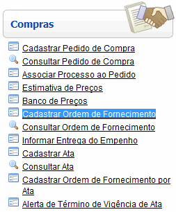
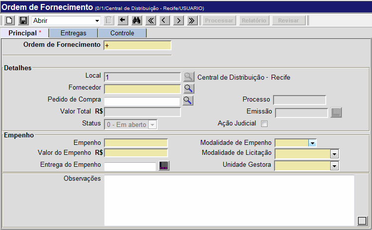
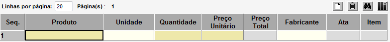
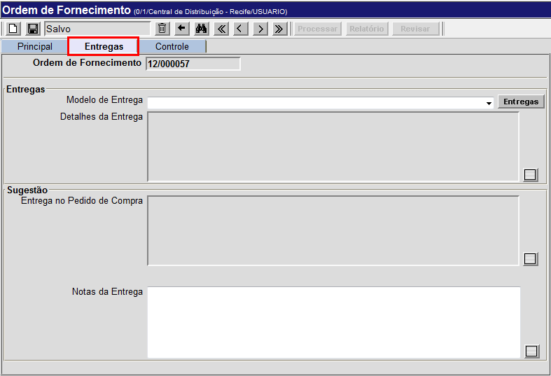
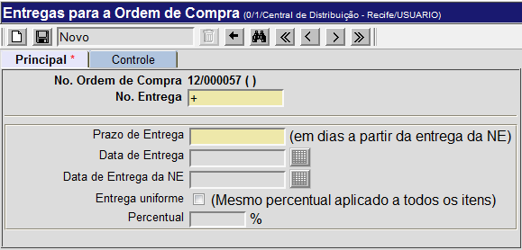
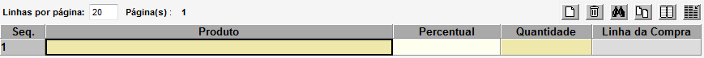
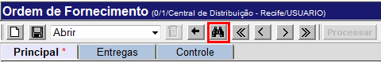
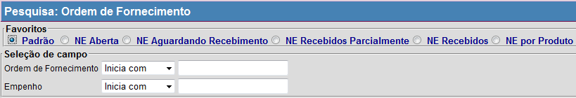

Cadastrar Ordem de Fornecimento [ Voltar ]
Utilize esta
tela para criar e revisar ordens de fornecimento.
O formulário "Cadastrar Ordem de Fornecimento"
encontra-se dentro do menu "Compras".

Ao clicar no formulário, o sistema exibirá a seguinte
tela:

Este
manual contém os passos para exibe o passo-a-passo para as seguintes
funcionalidades:
- Cadastrar ordem de fornecimento
- Pesquisar ordens de fornecimento existentes
Cadastrar ordem de fornecimentoSiga os passos
abaixo para cadastrar uma ordem de fornecimento,:
1º
Passo: informe
os dados principais da ordem. Os campos em amarelo são
obrigatórios.
- Ordem de Fornecimento.
Este campo apresenta um sinal de mais '+' por padrão. Desta forma,
quando a ordem de fornecimento é salva, é-lhe atribuído o próximo
número disponível.
- Local. O sistema preenche este campo automaticamente com o local onde o usuário se encontra.
- Fornecedor.
Informe neste campo o nome do fornecedor para esta ordem. Se desejar, clique no botão
 [Procurar] para
selecioná-lo a partir de uma lista contendo os fornecedores cadastrados. [Procurar] para
selecioná-lo a partir de uma lista contendo os fornecedores cadastrados. - Pedido
de Compra. Especifique neste campo o pedido de compra ao
qual esta ordem deve estar associada. Clique no botão [Procurar] para
selecioná-lo a partir de uma lista contendo os pedidos cadastrados.
- Processo. Caso o pedido possua um número de processo e previamente associado, este será
exibido aqui.
- Valor Total. Assim
que os preços unitários são informados, este campo exibe o valor total
da ordem.
- Emissão.
Quando a ordem de fornecimento é processada, o dia e hora do processamento é
salvo neste campo.
- Status. Durante
todas as etapas da ordem de fornecimento, é exibida neste campo sua
situação atual. Elas podem ser: Em
aberto, Processada
(aguardando recebimento), Parcialmente recebida ou
Finalizada
(recebida integralmente).
- Ação Judicial. Marque esta opção para indicar que esta ordem de fornecimento tem como origem uma ação judicial.
- Empenho.
Informe aqui o número do empenho associado a esta ordem.
- Modalidade de Empenho.
Selecione uma das modalidades de empenho: Global, Estimativo ou
Ordinário.
- Valor do Empenho.
Informe aqui o valor relativo ao empenho informado.
- Modalidade de Licitação.
Selecione a modalidade de licitação em questão: Carta Convite, Tomada de Preço, Concorrência, Pregão, Inexigibilidade, Dispensa ou
Adesão Ata.
- Entrega do Empenho.
Informe neste campo a data de entrega do empenho. É importante que este campo seja preenchido pois as telas "Previsão de Entregas" e "Calendário de Entregas" se baseiam nesta data para calcular as entregas. Se desejar, clique no
botão
 [Data]
para utilizar a função calendário. Dicas para preenchimento de
campos de data: [Data]
para utilizar a função calendário. Dicas para preenchimento de
campos de data:
- Data
atual:
digite o sinal . (ponto) e pressione a tecla
"Enter" para que o sistema retorne a data atual;
- Data
do mês corrente: digite o dia do mês e
pressione a tecla "Enter" para que o sistema retorne o mês e ano
correntes;
- Dias
a contar da data atual: digite o sinal + (mais) ou - (menos)
antes do número de dias em referência à data atual e pressione a
tecla "Enter" para a data anterior ou posterior à data atual.
2° Passo: clique no
botão  para
salvar os dados da ordem. Assim
que o registro é salvo, uma grade com
os produtos do pedido é exibida na parte inferior da tela. Caso um
pedido de compra tenha sido informado no passo 1, os produtos do pedido
em questão serão carregados na grade. para
salvar os dados da ordem. Assim
que o registro é salvo, uma grade com
os produtos do pedido é exibida na parte inferior da tela. Caso um
pedido de compra tenha sido informado no passo 1, os produtos do pedido
em questão serão carregados na grade.

3° Passo: informe na grade os produtos, quantidades e preços para esta ordem. Se
necessário, informe também o nome do fabricante dos produtos em
questão.
4° Passo: clique no
botão para
salvar os dados dos produtos da ordem.
5° Passo: clique na aba
"Entregas" para especificar o cronograma da entrega. Na
seção "Sugestão", será
possível visualizar o cronograma sugerido pelo criador do pedido de
compra - caso no ato do pedido tenha sido sugerida um modelo de
entrega. Nesta tela, você pode selecionar um dos modelos de entrega
existentes ou ainda criar uma entrega personalizada.

Selecione no campo "Modelo
de entrega"
um cronograma adequado para este pedido. Ao selecionar o modelo
desejado, uma descrição detalhada deste será exibida no campo "Descrição da entrega".
Os modelos de entrega disponíveis são:
- Conforme solicitação.
- 30% em 10 dias e mensais de 10%.
- 100% em 30 dias.
- 100% em 60 dias.
- 100% em 90 dias.
- 100% em 10 dias.
- 100% em 20 dias.
- 25% em 10 dias e 3 mensais de 25%.
- 40% em 10 dias e 2 mensais de 30%.
- 100% em 5 dias.
- 50% em 10 dias e 50% em 40 dias.
- 20% em 10 dias e 4 mensais de 20%.
- 30% em 10 dias, 2 mensais de 15% e 4 mensais de 10%.
- 30% em 10 dias, 20% em 40 dias, e 5 mensais de 10%.
- 100% em 15 dias.
- 25% em 90 dias e 3 mensais de 25%.
- 20% em 90 dias e 4 mensais de 20%.
Após selecionar um dos modelos de entrega, clique no botão
e prossiga para o 6° passo.
Para personalizar um cronograma de entregas, clique
no botão  ao
lado do campo "Modelo de Entrega". Para isto, ver informações abaixo: ao
lado do campo "Modelo de Entrega". Para isto, ver informações abaixo:

- Digite o número da entrega no campo "N°. Entrega"
e o prazo de dias em que esta deve acontecer (por exemplo: entrega 1,
10 dias após a entrega da nota de empenho; entrega 2, 20 dias após a
entrega da nota de empenho, etc).
- Clique no botão
para salvar a entrega. Assim que a entrega é salva, uma grade para
inclusão do conteúdo da entrega é exibido na parte inferior da tela.

- Informe
os produtos e quantidades que deseja para esta entrega. Se desejar
entregas uniformes, marque a opção "Entrega uniforme?" para que o mesmo
percentual seja aplicado a todos os itens. Em seguida, especifique o
percentual no campo de mesmo nome na grade.
- Clique no botão para concluir esta entrega.
- Para criar outras
entregas que comporão o cronograma, siga novamente os passos acima de
criação de entregas.
Após
personalizar as entregas, clique no botão  para voltar à tela
principal da ordem de fornecimento. para voltar à tela
principal da ordem de fornecimento.
6° Passo: clique no botão  para concluir a ordem de fornecimento.
Assim que o registro é processado os seguintes botões se tornarão
habilitados: para concluir a ordem de fornecimento.
Assim que o registro é processado os seguintes botões se tornarão
habilitados:
-
 - Clique neste botão para visualizar e imprimir o relatório "Ordem de
Fornecimento".
- Clique neste botão para visualizar e imprimir o relatório "Ordem de
Fornecimento".
-
 -
Caso algum dado da ordem necessite de revisão, clique neste botão
para alterá-lo. Após revisar o pedido, é necessário repetir o 6°
passo e processar novamente a ordem. -
Caso algum dado da ordem necessite de revisão, clique neste botão
para alterá-lo. Após revisar o pedido, é necessário repetir o 6°
passo e processar novamente a ordem.
Observação:
só é possível revisar ordens que não estejam vinculadas a um registro
de recebimento.
Pesquisar ordens de fornecimento existentes1º Passo: para localizar o registro que deseja consultar, clique no botão  da barra de botões. da barra de botões.

Na tela de pesquisa de registros de ordens de fornecimento, são exibidos os filtros "Ordem de Fornecimento" e "Empenho"
para fácil localização do registro de fornecimento. Informe os dígitos
iniciais da ordem ou os dígitos iniciais do empenho para que o sistema retorne automaticamente
todas as transferências
correspondentes. Para mais informações sobre outros recursos
e
funcionalidades da pesquisa, favor ver o manual Introdução
ao Sistema.

Assim
que o registro desejado é localizado, selecione-o com um clique. Ele será aberto e serão exibidas suas informações atuais.
Se desejar efetuar alguma alteração, lembre-se de
clicar no botão para salvar o registro.
|